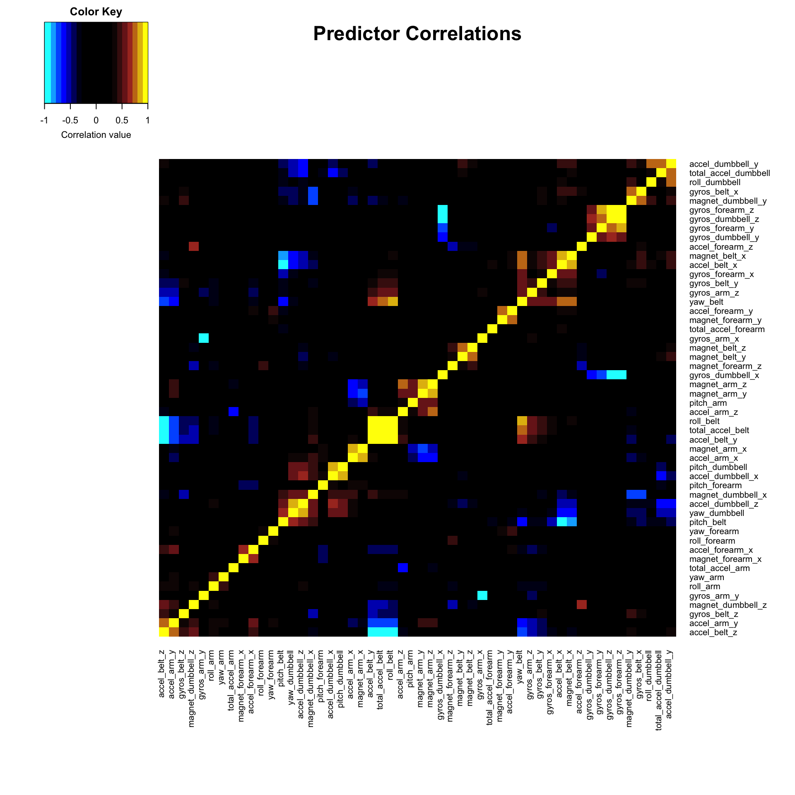
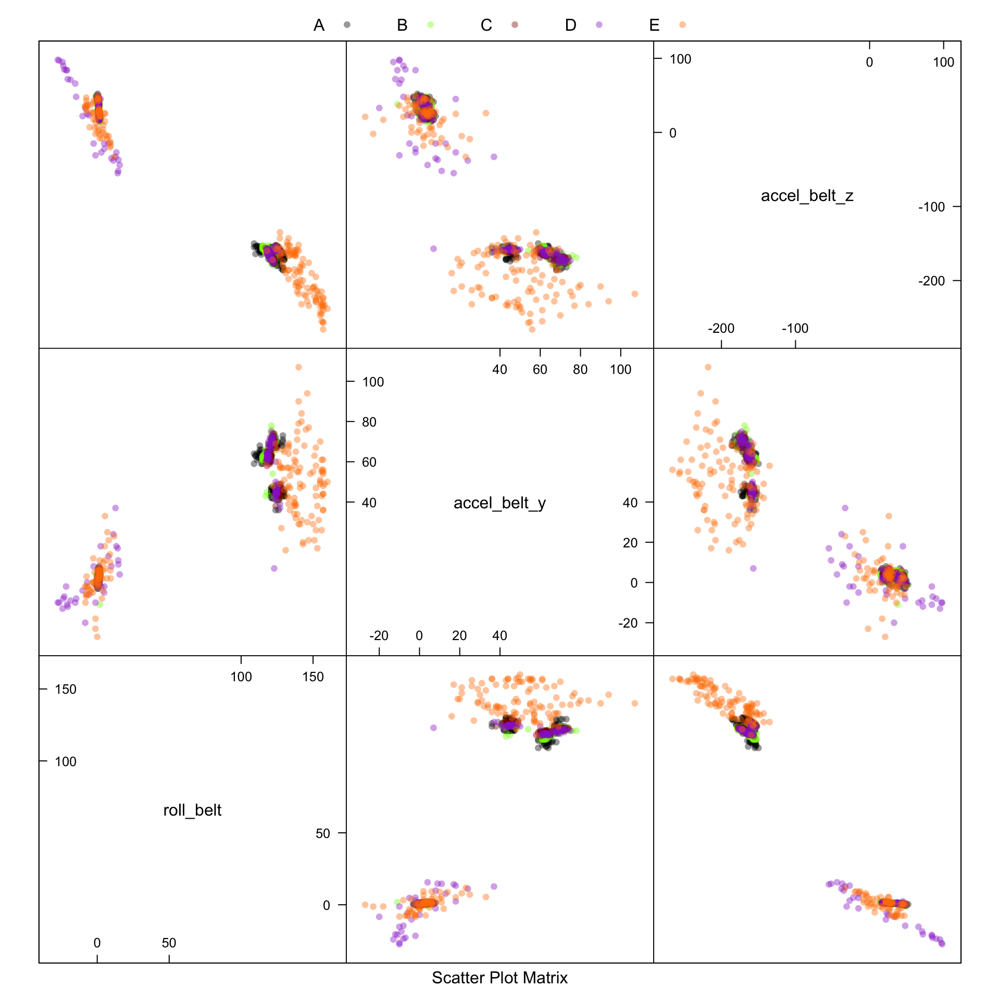

Machine learning prediction exercise for the “Weight Lifting Exercise Dataset”" (http://groupware.les.inf.puc-rio.br/har)
# download training data
url <- "http://d396qusza40orc.cloudfront.net/predmachlearn/pml-training.csv"
trainingFile="pml-training.csv"
download.file(url, destfile=trainingFile, method="curl")
# download test data
url <- "http://d396qusza40orc.cloudfront.net/predmachlearn/pml-testing.csv"
testingFile="pml-testing.csv"
download.file(url, destfile=testingFile, method="curl")# load training data
trainingFile="pml-training.csv"
data.train <- read.csv(trainingFile, header=TRUE, sep=",")
# load test data
testingFile="pml-testing.csv"
data.test <- read.csv(testingFile, header=TRUE, sep=",")
## load required and useful packages
library(caret)
library(randomForest)
library(gplots)
library(RColorBrewer)
library(AppliedPredictiveModeling)Examination of the data shows a number of non-informative columns as well as many with large fractions of missing values, either null or NA. The non-informative colums were removed along with any column with more than 10% missing or NA values.
A number of the columns are factor variables consisting of a large number of unique factors represented as floating point numbers. Thus, the factor data was converted to numerical type. Columns with just 2 factors are null or division by 0, and will therefore be eliminated.
## remove non-informative data colums:
## 1:7
## amplitude_yaw_belt (19)
## amplitude_yaw_dumbbell (101)
## amplitude_yaw_forearm (139)
use.train <- data.train[,-c(1:7,26,101,139)]
## result column index
n.rows <- dim(use.train)[1]
result.idx <- dim(use.train)[2]
## maximum fraction of missing values to retain a data column
max.nas <- 0.1
## Identify factor variables
factor.list <- c()
factor.counts <- c()
for (i in names(use.train[-result.idx])) {
if (is.factor(use.train[[i]])) {
factor.list <- c(factor.list, i)
factor.counts <- c(factor.counts, nlevels(use.train[[i]]))
print(paste(i, " :: ", nlevels(use.train[[i]])))
}
}## [1] "kurtosis_roll_belt :: 397"
## [1] "kurtosis_picth_belt :: 317"
## [1] "kurtosis_yaw_belt :: 2"
## [1] "skewness_roll_belt :: 395"
## [1] "skewness_roll_belt.1 :: 338"
## [1] "skewness_yaw_belt :: 2"
## [1] "max_yaw_belt :: 68"
## [1] "min_yaw_belt :: 68"
## [1] "kurtosis_roll_arm :: 330"
## [1] "kurtosis_picth_arm :: 328"
## [1] "kurtosis_yaw_arm :: 395"
## [1] "skewness_roll_arm :: 331"
## [1] "skewness_pitch_arm :: 328"
## [1] "skewness_yaw_arm :: 395"
## [1] "kurtosis_roll_dumbbell :: 398"
## [1] "kurtosis_picth_dumbbell :: 401"
## [1] "kurtosis_yaw_dumbbell :: 2"
## [1] "skewness_roll_dumbbell :: 401"
## [1] "skewness_pitch_dumbbell :: 402"
## [1] "skewness_yaw_dumbbell :: 2"
## [1] "max_yaw_dumbbell :: 73"
## [1] "min_yaw_dumbbell :: 73"
## [1] "kurtosis_roll_forearm :: 322"
## [1] "kurtosis_picth_forearm :: 323"
## [1] "kurtosis_yaw_forearm :: 2"
## [1] "skewness_roll_forearm :: 323"
## [1] "skewness_pitch_forearm :: 319"
## [1] "skewness_yaw_forearm :: 2"
## [1] "max_yaw_forearm :: 45"
## [1] "min_yaw_forearm :: 45"## Convert factor data to numerical type and missing values to NAs.
## Null values (numerical or factor) will be nonverted to NAs.
## Remove data columns with a large fraction of NAs (max.na)
for (i in names(use.train[-result.idx])) {
use.train[[i]] <- as.numeric(as.character(use.train[[i]]))
frac.nas <- length(use.train[[i]][is.na(use.train[[i]])]) / n.rows
if (frac.nas > max.nas) {
# remove column
use.train <- use.train[,-which(names(use.train) %in% c(i))]
}
}
result.idx <- dim(use.train)[2]To identify groups of similar predictors a heatmap of the pairwise correlations was generated. Predictors with correlation values close to 1 or -1 are related and therefore not independent. These can be either pruned or combined into co-factors in order to test ways pf improving the model. Initially, this step is left to the automatic treatment by the caret package preProcess function.
## calculate pair-wise correlations for all predictors
train.cor <- as.matrix(cor(use.train[,-result.idx],use.train[,-result.idx]))
## display the most correlated or anti-correlated predictor pairs
for (i in dimnames(train.cor)[[1]]) {
for (j in dimnames(train.cor)[[2]]) {
if (i != j && abs(train.cor[i,j]) > 0.8) {
print(paste(i, " : ", j, " => cor=", train.cor[i,j], sep=''))
}
}
}## [1] "roll_belt : yaw_belt => cor=0.815229713772366"
## [1] "roll_belt : total_accel_belt => cor=0.980924143698649"
## [1] "roll_belt : accel_belt_y => cor=0.924898265903547"
## [1] "roll_belt : accel_belt_z => cor=-0.992008512879117"
## [1] "pitch_belt : accel_belt_x => cor=-0.965733396777588"
## [1] "pitch_belt : magnet_belt_x => cor=-0.884172747229078"
## [1] "yaw_belt : roll_belt => cor=0.815229713772366"
## [1] "total_accel_belt : roll_belt => cor=0.980924143698649"
## [1] "total_accel_belt : accel_belt_y => cor=0.927806920706301"
## [1] "total_accel_belt : accel_belt_z => cor=-0.974931730075642"
## [1] "accel_belt_x : pitch_belt => cor=-0.965733396777588"
## [1] "accel_belt_x : magnet_belt_x => cor=0.892091276102237"
## [1] "accel_belt_y : roll_belt => cor=0.924898265903547"
## [1] "accel_belt_y : total_accel_belt => cor=0.927806920706301"
## [1] "accel_belt_y : accel_belt_z => cor=-0.9333854057113"
## [1] "accel_belt_z : roll_belt => cor=-0.992008512879117"
## [1] "accel_belt_z : total_accel_belt => cor=-0.974931730075642"
## [1] "accel_belt_z : accel_belt_y => cor=-0.9333854057113"
## [1] "magnet_belt_x : pitch_belt => cor=-0.884172747229078"
## [1] "magnet_belt_x : accel_belt_x => cor=0.892091276102237"
## [1] "gyros_arm_x : gyros_arm_y => cor=-0.918182137864574"
## [1] "gyros_arm_y : gyros_arm_x => cor=-0.918182137864574"
## [1] "accel_arm_x : magnet_arm_x => cor=0.814273178176859"
## [1] "magnet_arm_x : accel_arm_x => cor=0.814273178176859"
## [1] "magnet_arm_y : magnet_arm_z => cor=0.814445522779317"
## [1] "magnet_arm_z : magnet_arm_y => cor=0.814445522779317"
## [1] "pitch_dumbbell : accel_dumbbell_x => cor=0.808288506962984"
## [1] "yaw_dumbbell : accel_dumbbell_z => cor=0.849132181253442"
## [1] "gyros_dumbbell_x : gyros_dumbbell_z => cor=-0.978950698128391"
## [1] "gyros_dumbbell_x : gyros_forearm_z => cor=-0.914476413154389"
## [1] "gyros_dumbbell_z : gyros_dumbbell_x => cor=-0.978950698128391"
## [1] "gyros_dumbbell_z : gyros_forearm_z => cor=0.933042179694563"
## [1] "accel_dumbbell_x : pitch_dumbbell => cor=0.808288506962984"
## [1] "accel_dumbbell_z : yaw_dumbbell => cor=0.849132181253442"
## [1] "gyros_forearm_y : gyros_forearm_z => cor=0.845562592424503"
## [1] "gyros_forearm_z : gyros_dumbbell_x => cor=-0.914476413154389"
## [1] "gyros_forearm_z : gyros_dumbbell_z => cor=0.933042179694563"
## [1] "gyros_forearm_z : gyros_forearm_y => cor=0.845562592424503"## set up a color palette to emphasize high correlation pairs
my_palette <- colorRampPalette(c("cyan","blue","black","black","black","brown", "yellow"))(n=20)
## draw heatmap
heatmap.2(train.cor,
symm=TRUE,
main="Predictor Correlations", # heat map title
notecol="black", # change font color of cell labels to black
density.info="none", # turn off density plot inside color legend
trace="none", # turn off trace lines inside the heatmap
margins=c(12,9), # widen margins around plot
col=my_palette, # choose color palette
keysize=1., # size of color legend image
key.par=list(cex=0.7), # key text size
key.xlab="Correlation value", # color key axis label
dendrogram="none" # no dendrogram
# dendrogram="row") # draw row dendrogram
)
A feature plot can also be used to visually examine the similarity between feature pairs. Given the large number of features, it is impractical to look at a full pairwise view, therefore, individual features can be compared based on the heatmap correlation information. Below is an example of 3 highly correlated predictors: ‘roll_belt’,‘accel_belt_y’,‘accel_belt_z’. Data smapling (1000 random rows of 19622 in full training set) is used to prevent loss of visibility of overlapping data points from different classes.
transparentTheme(trans = .4)
myColors <- c("#000000", "#7fff00", "#8b0000", "#9932cc", "#ff7f00", "#458b00", "#008b8b", "#0000ff", "#ffff00" )
pch_vector <- rep(16, 5)
my_settings <- list(superpose.symbol=list(alpha=rep(.4,5), col=myColors, cex=rep(0.8, 5),
fill=myColors, font=rep(1, 5), pch=pch_vector))
## example
set.seed(51515)
use.train.slice <- use.train[sample(nrow(use.train), 1000),]
featurePlot(x=use.train.slice[,c('roll_belt','accel_belt_y','accel_belt_z')], y=use.train.slice$classe,
plot="pairs", auto.key=list(columns = 5), par.settings=my_settings)
Two pre-processing strategies were tested. First, using principal components and removing all NAs. Second, centering and scaling all predictors, and using knn imputation for missing data.
A random forest model was built for each training data set with 5-fold cross validation. Construction of these models is time consuming. Accuracy for the PCA-based model was 0.974, and 0.995 for the knn imputed data.
set.seed(1966)
inTrain = createDataPartition(use.train$classe, p=0.7, list=FALSE)
training = use.train[ inTrain,] ## 70% of the data
testing = use.train[-inTrain,] ## 30% of the data###
### PCA pre-processing
###
## last column is the result (classe)
preProc.1 <- preProcess(training[,-result.idx], na.remove = TRUE, method="pca", thresh=.9)
trainPC.1 <- predict(preProc.1, training[,-result.idx])
modFit.1 <- train(training$classe ~ ., data=trainPC.1, method="rf",
trControl=trainControl(method="cv", number=5),
prox=TRUE, allowParallel=TRUE)
print(modFit.1)## Random Forest
##
## 13737 samples
## 17 predictor
## 5 classes: 'A', 'B', 'C', 'D', 'E'
##
## No pre-processing
## Resampling: Cross-Validated (5 fold)
##
## Summary of sample sizes: 10990, 10990, 10989, 10991, 10988
##
## Resampling results across tuning parameters:
##
## mtry Accuracy Kappa Accuracy SD Kappa SD
## 2 0.9659 0.9569 0.005017 0.006353
## 10 0.9611 0.9507 0.005225 0.006609
## 18 0.9532 0.9408 0.008061 0.010190
##
## Accuracy was used to select the optimal model using the largest value.
## The final value used for the model was mtry = 2.modFit.1$finalModel##
## Call:
## randomForest(x = x, y = y, mtry = param$mtry, proximity = TRUE, allowParallel = TRUE)
## Type of random forest: classification
## Number of trees: 500
## No. of variables tried at each split: 2
##
## OOB estimate of error rate: 2.86%
## Confusion matrix:
## A B C D E class.error
## A 3861 11 24 8 2 0.01152
## B 54 2557 40 2 5 0.03800
## C 4 45 2319 25 3 0.03214
## D 13 7 100 2129 3 0.05462
## E 1 10 16 20 2478 0.01861testPC.1 <- predict(preProc.1, testing[,-result.idx])
cm.1 <- confusionMatrix(testing$classe, predict(modFit.1, testPC.1))
cm.1## Confusion Matrix and Statistics
##
## Reference
## Prediction A B C D E
## A 1657 7 3 6 1
## B 24 1094 21 0 0
## C 2 18 994 8 4
## D 1 2 40 920 1
## E 1 5 6 3 1067
##
## Overall Statistics
##
## Accuracy : 0.974
## 95% CI : (0.97, 0.978)
## No Information Rate : 0.286
## P-Value [Acc > NIR] : < 2e-16
##
## Kappa : 0.967
## Mcnemar's Test P-Value : 4.86e-06
##
## Statistics by Class:
##
## Class: A Class: B Class: C Class: D Class: E
## Sensitivity 0.983 0.972 0.934 0.982 0.994
## Specificity 0.996 0.991 0.993 0.991 0.997
## Pos Pred Value 0.990 0.960 0.969 0.954 0.986
## Neg Pred Value 0.993 0.993 0.986 0.997 0.999
## Prevalence 0.286 0.191 0.181 0.159 0.182
## Detection Rate 0.282 0.186 0.169 0.156 0.181
## Detection Prevalence 0.284 0.194 0.174 0.164 0.184
## Balanced Accuracy 0.990 0.981 0.964 0.986 0.996###
### knn imputation pre-processing
###
training = use.train[ inTrain,] ## 70% of the data
testing = use.train[-inTrain,] ## 30% of the data
preProc.2 <- preProcess(training[,-result.idx], k=5, knnSummary=mean, method=c("center", "scale", "knnImpute"))
trainPC.2 <- predict(preProc.2, training[,-result.idx])
modFit.2 <- train(training$classe ~ ., data=trainPC.2, method="rf", trControl=trainControl(method="cv",number=5),
prox=TRUE, allowParallel=TRUE)
print(modFit.2)## Random Forest
##
## 13737 samples
## 51 predictor
## 5 classes: 'A', 'B', 'C', 'D', 'E'
##
## No pre-processing
## Resampling: Cross-Validated (5 fold)
##
## Summary of sample sizes: 10989, 10988, 10990, 10990, 10991
##
## Resampling results across tuning parameters:
##
## mtry Accuracy Kappa Accuracy SD Kappa SD
## 2 0.9907 0.9882 0.001516 0.001919
## 27 0.9903 0.9878 0.002118 0.002681
## 52 0.9842 0.9800 0.004379 0.005542
##
## Accuracy was used to select the optimal model using the largest value.
## The final value used for the model was mtry = 2.modFit.2$finalModel##
## Call:
## randomForest(x = x, y = y, mtry = param$mtry, proximity = TRUE, allowParallel = TRUE)
## Type of random forest: classification
## Number of trees: 500
## No. of variables tried at each split: 2
##
## OOB estimate of error rate: 0.7%
## Confusion matrix:
## A B C D E class.error
## A 3905 1 0 0 0 0.000256
## B 10 2642 6 0 0 0.006020
## C 0 24 2370 2 0 0.010851
## D 0 0 46 2205 1 0.020870
## E 0 0 1 5 2519 0.002376testPC.2 <- predict(preProc.2, testing[,-result.idx])
cm.2 <- confusionMatrix(testing$classe, predict(modFit.2, testPC.2))
cm.2## Confusion Matrix and Statistics
##
## Reference
## Prediction A B C D E
## A 1674 0 0 0 0
## B 7 1132 0 0 0
## C 0 7 1019 0 0
## D 0 0 12 950 2
## E 0 0 0 2 1080
##
## Overall Statistics
##
## Accuracy : 0.995
## 95% CI : (0.993, 0.997)
## No Information Rate : 0.286
## P-Value [Acc > NIR] : <2e-16
##
## Kappa : 0.994
## Mcnemar's Test P-Value : NA
##
## Statistics by Class:
##
## Class: A Class: B Class: C Class: D Class: E
## Sensitivity 0.996 0.994 0.988 0.998 0.998
## Specificity 1.000 0.999 0.999 0.997 1.000
## Pos Pred Value 1.000 0.994 0.993 0.985 0.998
## Neg Pred Value 0.998 0.999 0.998 1.000 1.000
## Prevalence 0.286 0.194 0.175 0.162 0.184
## Detection Rate 0.284 0.192 0.173 0.161 0.184
## Detection Prevalence 0.284 0.194 0.174 0.164 0.184
## Balanced Accuracy 0.998 0.996 0.993 0.998 0.999Test case data has to be pre-processed in the same way as the training data prior to caret preProcess handling. Specifically, conversion of factor column data to numeric type.
For the final prediction, the second model was selected, being more accurate on the training data.
## pre-process test case data as training data
use.test <- data.test[,-c(1:7,26,101,139)]
for (i in names(use.test)) {
if (i %in% names(use.train)) {
use.test[[i]] <- as.numeric(as.character(use.test[[i]]))
} else {
use.test <- use.test[,-which(names(use.test) %in% c(i))]
}
}
test.pred <- predict(preProc.2, use.test)
new.pred.res <- predict(modFit.2, test.pred)
new.pred.res## [1] B A B A A E D B A A B C B A E E A B B B
## Levels: A B C D E